AI: historical perspective
Machine Learning
Learning to solve problems from data, without explicit programming
- Data: identify input $\mathbf{x} \in \mathcal{X}$, e.g. images, texts or $\mathcal{X} \subseteq \mathbb{R}^d$
- Machine learning task: identify output $\mathbf{y} \in \mathcal{Y}$ s.t. $\mathbf{y} = f(\mathbf{x})$, e.g. $\mathcal{Y} \subseteq \mathbb{R}$ (regression) or $\mathcal{Y} = \{1, 2, ..., K\}$ (classification)
- Training: build a model $h$ from a training set $\mathcal{D} = \{\mathbf{x}_i\}_{i=1}^n$ (unsupervised) or $\mathcal{D} = \{(\mathbf{x}_i, \mathbf{y}_i)\}_{i=1}^n$ (supervised)
- Prediction: $\hat{y} = h(\mathbf{x}), \forall \mathbf{x} \in \mathcal{X}$
Machine Learning
Training: finding parameters $\theta^{\star}$ that minimize the loss function
- Goal
Find $h$ approximating $f$, based on a $\mathcal{D} = \{(\mathbf{x}_i, \mathbf{y}_i)\}_{i=1}^n$ - Parametric model
$h$ defined by $p$ parameters $h(\cdot;\bm{\theta})$ with $\boldsymbol{\theta} \in \mathbb{R}^{p}$ - Loss function
Choose (or define) a loss function $\ell : \mathcal{Y} \times \mathcal{Y} \to \mathbb{R}$ that penalizes "bad" $h$ candidates: \[ \mathcal{L}(\bm{\theta}) = \dfrac{1}{n} \displaystyle\sum_{i=1}^{n} \ell\!\left(h(\mathbf{x}_i;\boldsymbol{\theta}),\, y_i\right) \] e.g. mean squared error for regression, cross-entropy for classification - Training
Use optimization tools to find $\boldsymbol{\theta}^*$ that minimize the loss function: \[ \bm{\theta}^* = \underset{\boldsymbol{\theta}}{\arg\min}\ \mathcal{L}(\boldsymbol{\theta}) \] e.g. gradient descent (illustration on the right)
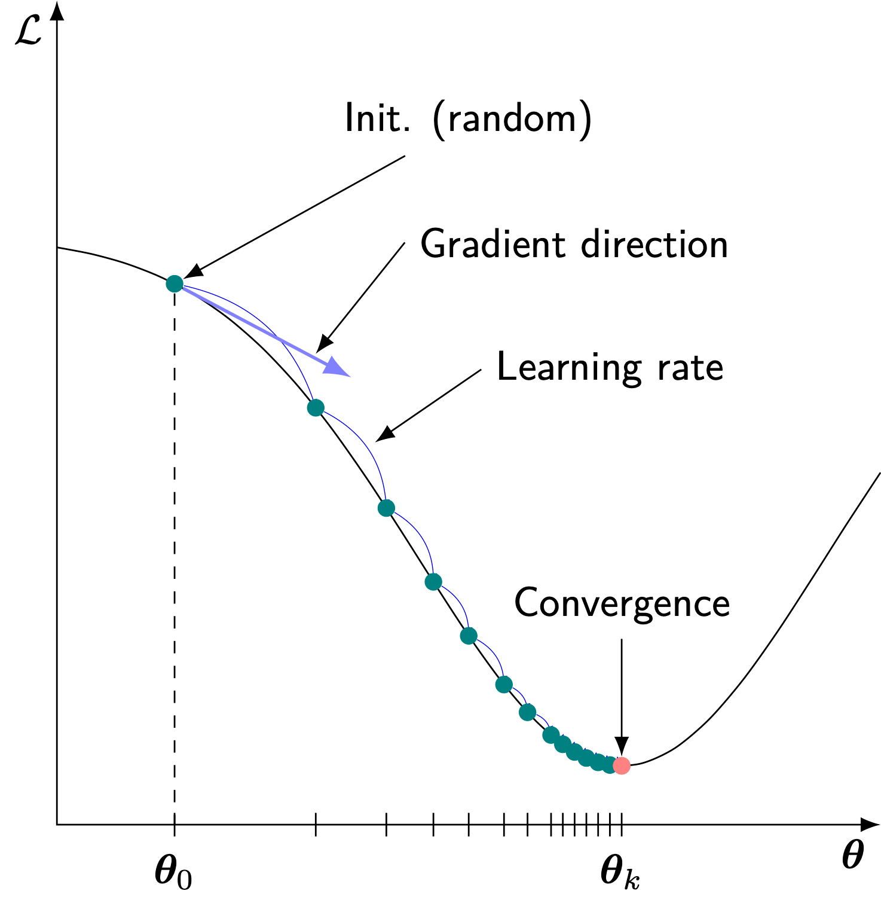
Deep Neural Networks
Perceptron (Rosenblatt, 1957)
- Input/output: ${\color{mediumseagreen} \mathbf{x} \in \mathbb{R}^d}, {\color{salmon} y \in [0,1]}$
- $h_{\mathbf{w},b}(\mathbf{x}) = \hat{y} = \sigma(\mathbf{w}^\top \mathbf{x} + b)$
- $p = d+1$ parameters to learn
- Learning with stochastic gradient descent
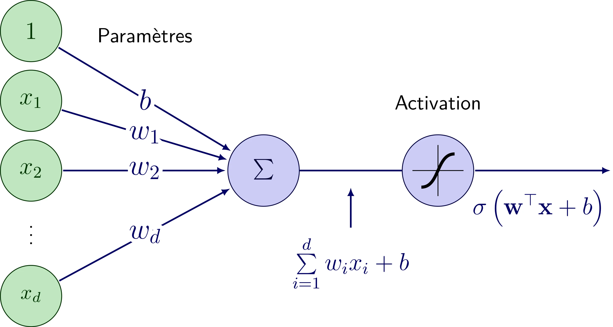
Deep Neural Networks (Amari, 1967)
- 2+ successive layers of neurons
- $p$ increases with the number of neurons
- The larger $p$, the more data is needed...
- ...the more computationally expensive the training process
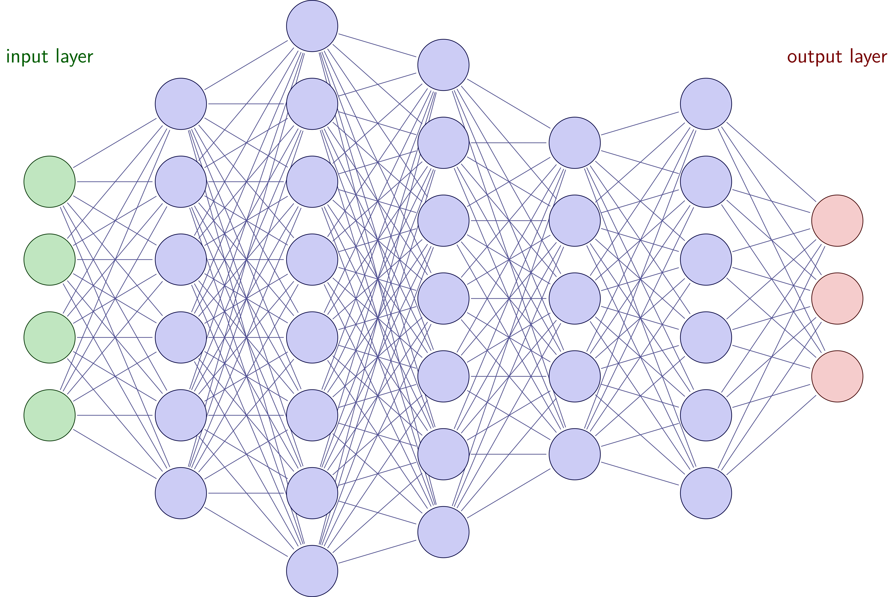
Deep Neural Networks
DNN are around for 60 years, so why is it working now?
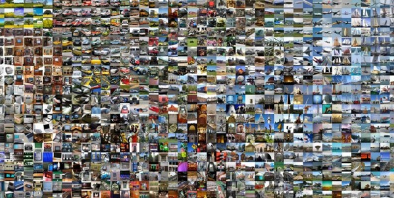
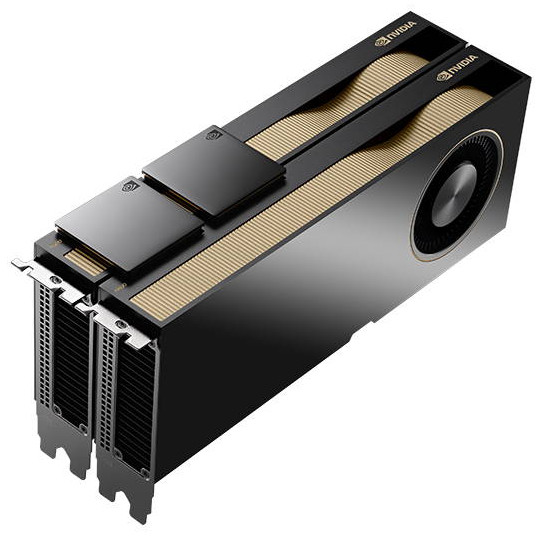
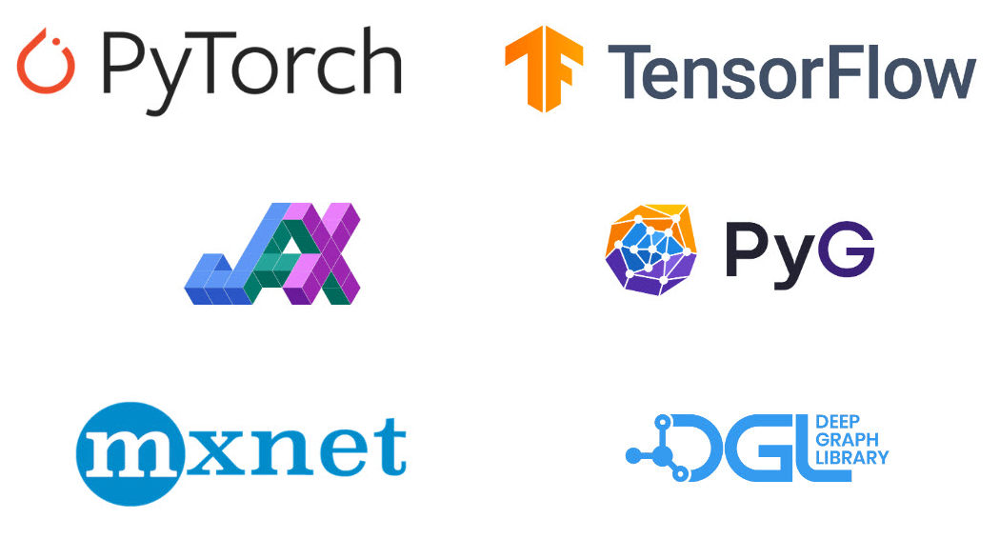
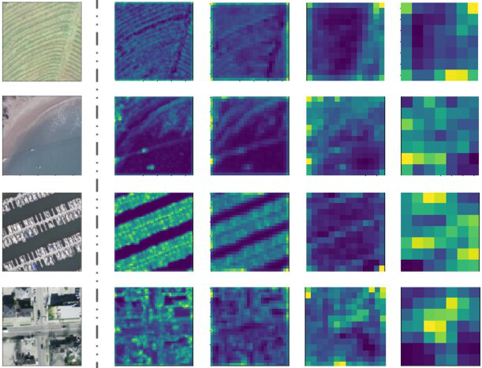
Example: representation learning for images/videos
Image/video analysis: Convolutional NN + regular NN
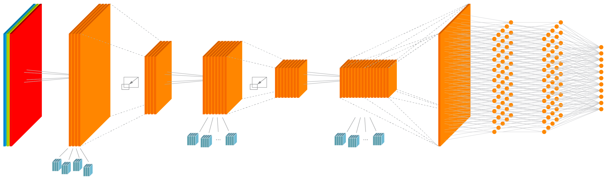
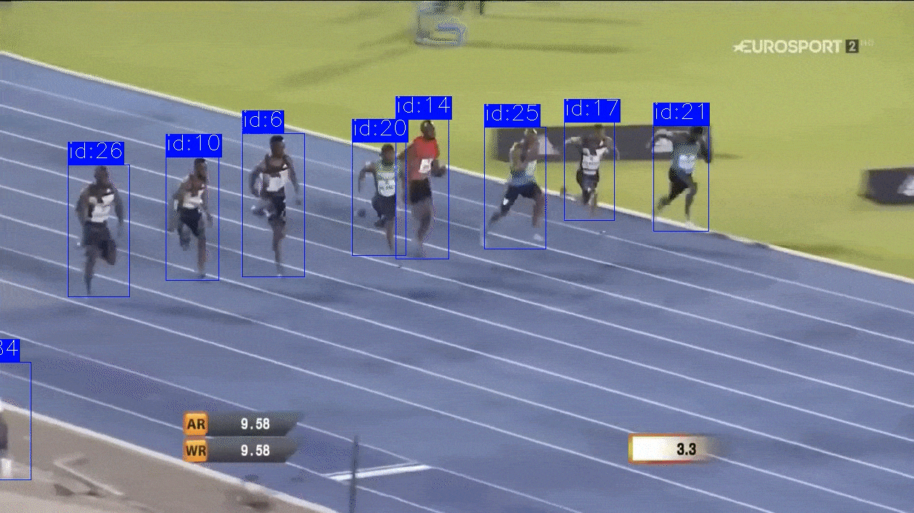
Example: representation learning for images/videos
Image/video generation: Encoder-decoder architecture + adversarial or diffusion training
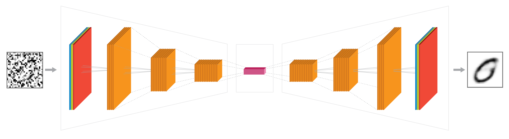
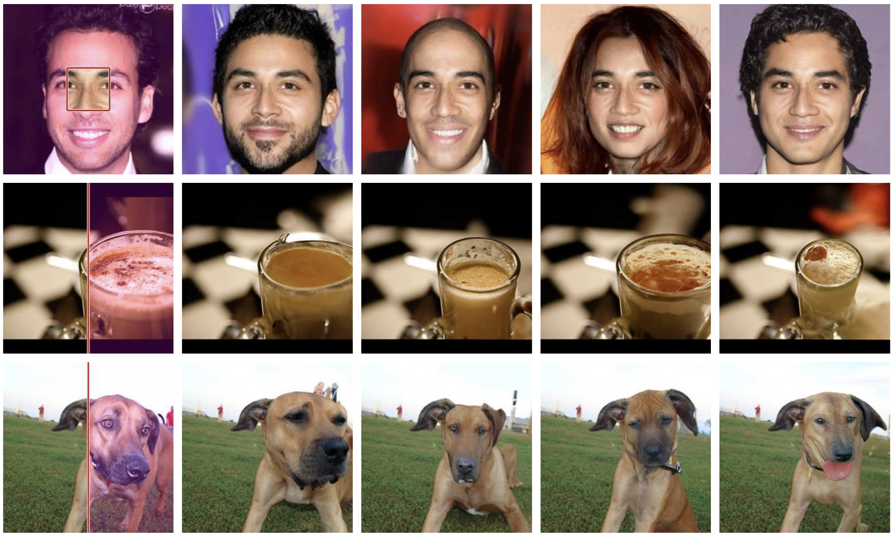
Example: representation learning for texts
Text understanding and generation: Encoder-decoder architecture + attention mechanism
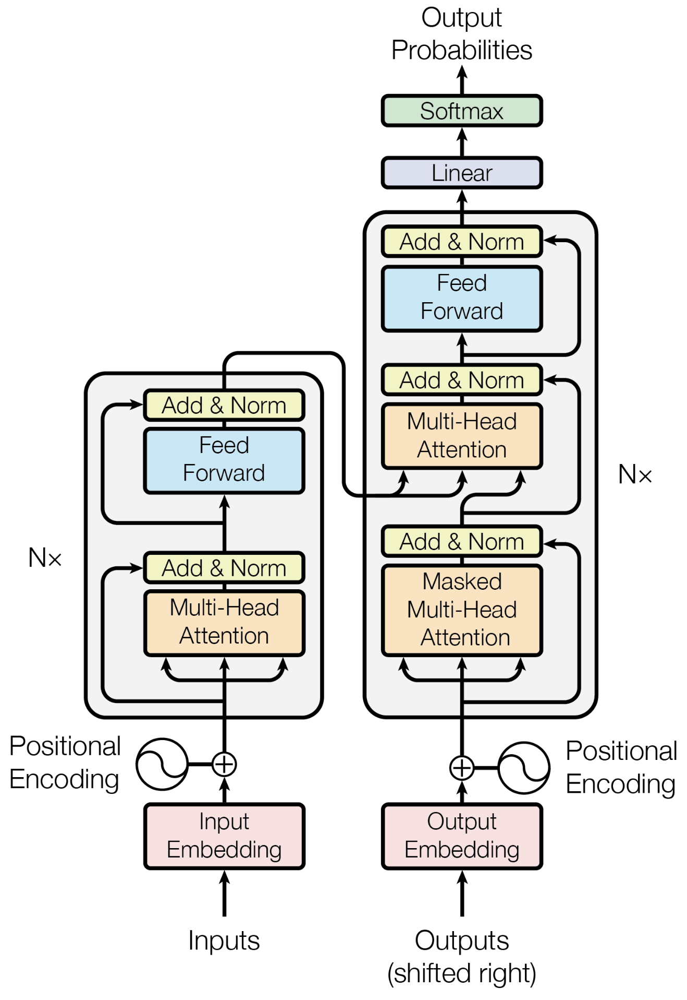
Large Language Models (LLMs):
- Trained on large corpora of text data
- Can generate coherent and contextually relevant text
- Chatbots, content generation, code generation, etc.
AI for Sciences
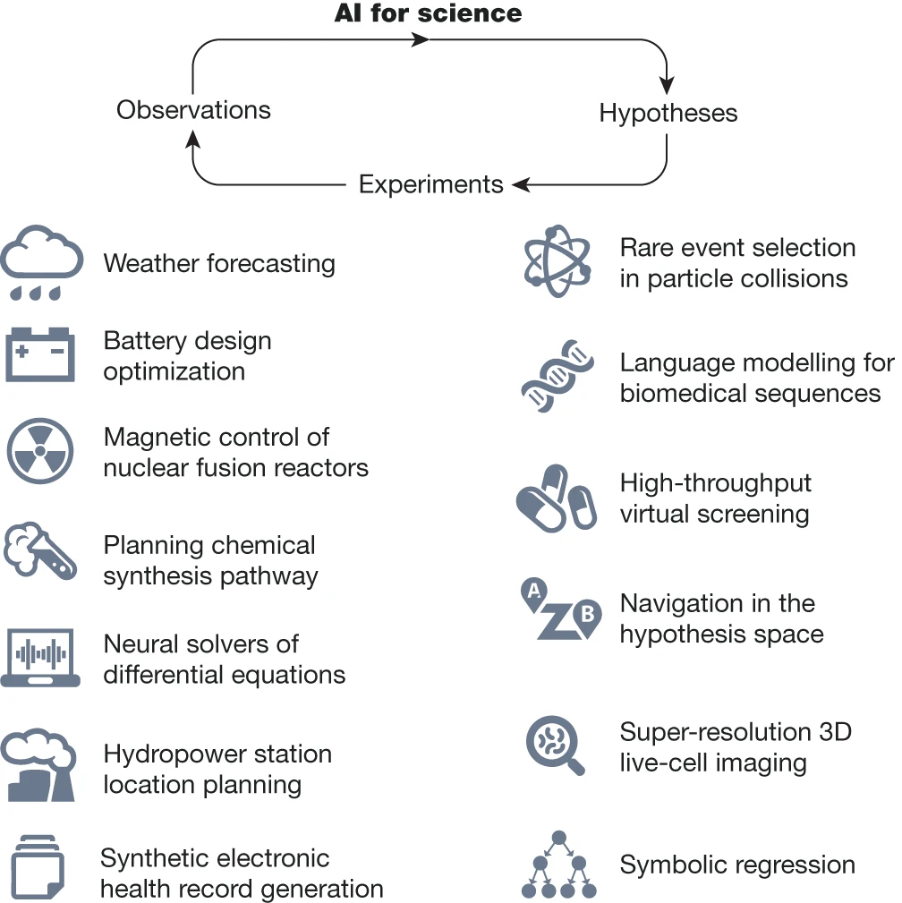
Major successes of AI: digital applications
- Images, videos, texts, video games, etc.
- Massively available data
What about sciences and engineering? Can we use AI to:
- be a better alternative to traditional approaches?
- solve problems more effectively?
- accelerate scientific discovery?
AI for Sciences: notable recent works
Weather forecasting
- GraphCast (Google DeepMind, 2023)
- Deep learning model:
- Training data: 40 years of observations (ECMWF)
- Big representation learning model (right)
- Huge computational resources

AI for Sciences: notable recent works
Nuclear fusion for sustainable energy production
- High-performance, clean and virtually inexhaustible energy (natural fuel, high efficiency)
- Experimental, as it is very difficult to control due to the unstable state of the plasma used for fusion
- AI for modeling and controlling the plasma in fusion reactors:
- Based on reinforcement learning
- Simulated data and control policy that require significant domain expertise
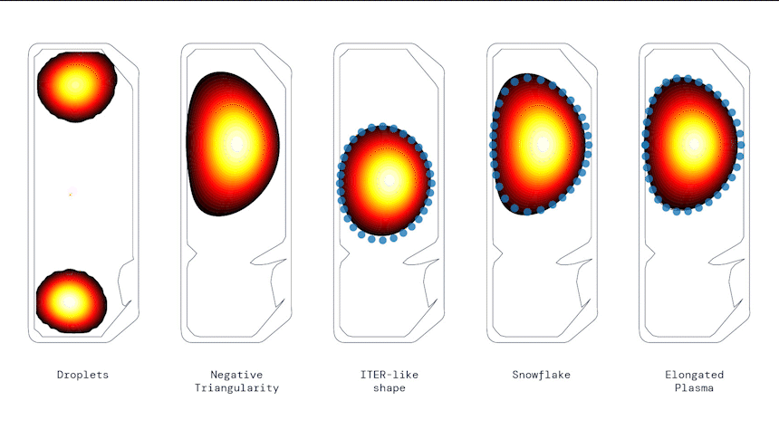
AI for Sciences: notable recent works
Protein structure prediction
- AlphaFold 2 (Google DeepMind, 2021)
- Trained on 200k+ known structures, predictions for almost all known proteins (∼ 200M)
- Deep learning model inspired by LLMs and with an iterative generation approach
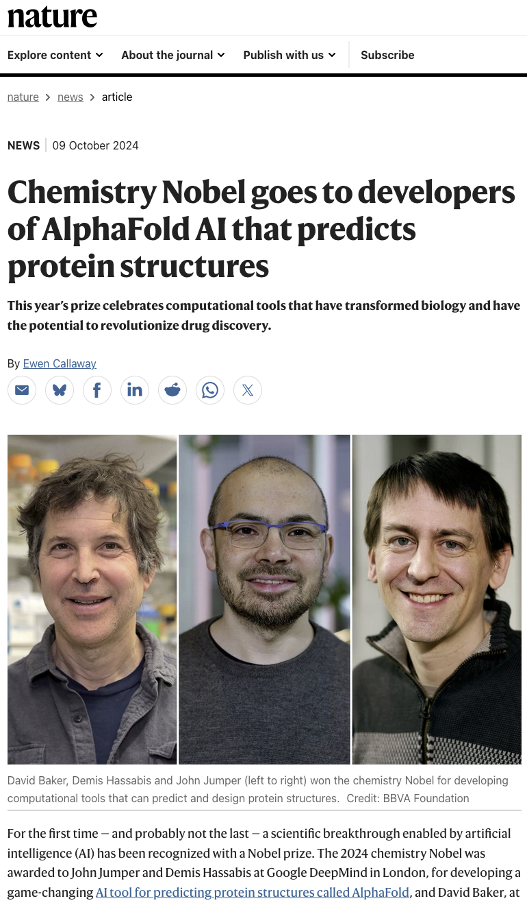
AI for Sciences
Main challenges:
- Need for a large amount of labeled data
- Interpretability & uncertainty quantification
- Poor out-of-distribution generalization
- Physical/biological constraints must be satisfied
Contradictory to the scientific approach:
- Based on theory and experiments
- Must be interpretable and explainable
- Must allow for reliable predictions on new cases
- Must be consistent with scientific knowledge
Solution
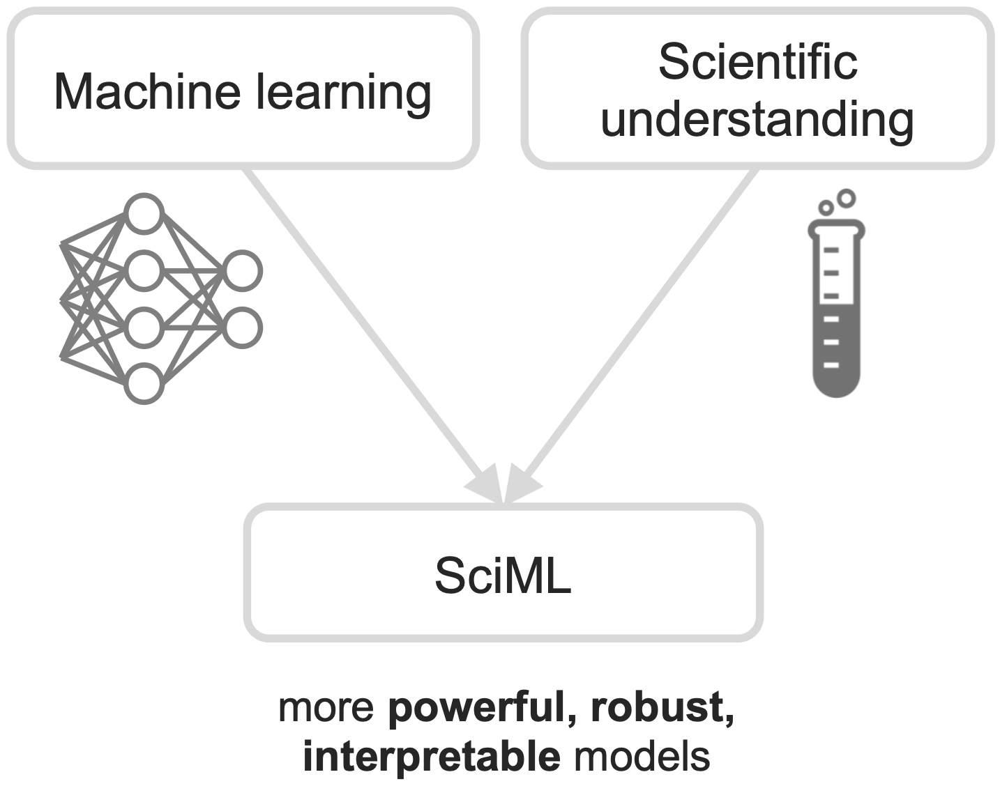
Computational Fluid Dynamics as a case study
Partial Differential Equations are building blocks of science
- Partial derivative of a function $u(x_1, \ldots, x_n) : \mathbb{R}^n \to \mathbb{R}$: $$ \frac{\partial u}{\partial x_i} = \lim_{\Delta x_i \to 0} \frac{u(x_1, \ldots, x_i + \Delta x_i, \ldots, x_n) - u(x_1, \ldots, x_i, \ldots, x_n)}{\Delta x_i} $$ i.e. the magnitude of variation of $u$ with respect to a small change in $x_i$
- Partial Differential Equations: $$ F\left(x_1, \ldots, x_n, u, \frac{\partial u}{\partial x_1}, \ldots, \frac{\partial u}{\partial x_n}, \frac{\partial^2 u}{\partial x_1^2}, \frac{\partial^2 u}{\partial x_1 \partial x_2}, \ldots \right) = 0 $$
- To model physical phenomena (mechanics, electromagnetism, acoustics, thermodynamics), chemical (reaction kinetics), or biological (population dynamics) processes
- Example: Navier-Stokes equations for fluid flow
\[ \begin{cases} \dfrac{\partial \mathbf{u}}{\partial t} + (\mathbf{u} \cdot \nabla) \mathbf{u} = -\nabla p + \nu \nabla^2 \mathbf{u} + \mathbf{f} & \text{(momentum equation)}\\ \nabla \cdot \mathbf{u} = 0 & \text{(incompressibility condition)} \end{cases} \] with $\mathbf{u}$ the velocity field, $p$ the pressure, $\nu$ the kinematic viscosity and $\mathbf{f}$ the external forces
Computational Fluid Dynamics as a case study
Governing equations: \[ \begin{cases} \dfrac{\partial \mathbf{u}}{\partial t} + (\mathbf{u} \cdot \nabla) \mathbf{u} = -\nabla p + \nu \nabla^2 \mathbf{u} + \mathbf{f} & \text{(momentum equation)}\\ \nabla \cdot \mathbf{u} = 0 & \text{(incompressibility condition)} \end{cases} \] with $\mathbf{u}$ the velocity field, $p$ the pressure, $\nu$ the kinematic viscosity and $\mathbf{f}$ the external forces
- Traditional solvers based on numerical methods
- Limitations: high computational cost
Can takes weeks of HPC time for a single simulation - One simulation per configuration:
- Initial conditions
- Boundary conditions
- Physical parameters (e.g. viscosity)
- Faster and more versatile solvers using machine learning?

Scientific Machine Learning taxonomy
1. ML into scientific pipelines
Incorporate ML models into scientific pipelines, e.g. use ML to accelerate or improve traditional numerical methods
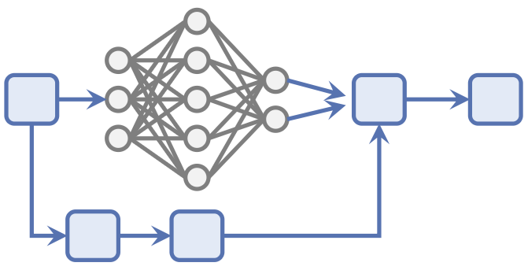
2. Scientific knowledge into ML process
Incorporate scientific knowledge into the learning process, e.g. add physical constraints to the loss function
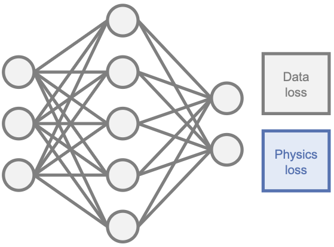
3. Architectural modifications
Modify architectures to respect scientific principles, e.g. replace NN building blocks with physical operators
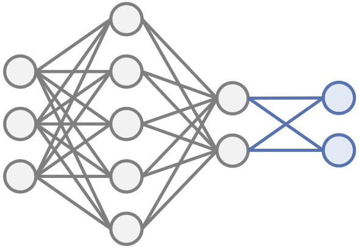
1. ML models into scientific pipelines
Key idea: replace part of numerical solvers with ML models
- Examples:
- Neural Ordinary Differential Equations (Chen et al., NeurIPS, 2018)
$$ \dfrac{d\mathbf{z}(t)}{dt} = NN(\mathbf{z}(t), t; \boldsymbol{\theta}) $$ with $\mathbf{z}(t)$ the state of the system at time $t$, $NN$ a neural network and $\boldsymbol{\theta}$ the parameters to learn - ML models for upscaling simulations (Um et al., 2020, Belbute-Peres et al., 2020)
- ML-accelerated solvers, e.g. with learned preconditionners (Lan et al. 2024)
- ML-assisted discretizations, e.g. by learning subgrid-scaled models (Kang et al., 2023)
- Hamiltonian Neural Networks (Greydanus et al., 2020)
We will not go into further detail about this approach in this presentation.
2. Scientific knowledge into the learning process
Key idea: incorporate domain-specific knowledge into the training process of ML models
- Typically, the loss function is decomposed into two terms: \[ \mathcal{L}(\boldsymbol{\theta}) = \mathcal{L}_{data}(\boldsymbol{\theta}) + \lambda \mathcal{L}_{physics}(\boldsymbol{\theta}) \] where $\mathcal{L}_{data}$ is the data-driven loss, $\mathcal{L}_{physics}$ is the physics-driven loss
- Examples:
- Physics-Informed Neural Networks (details to follow)
- Physical constraints to enforce conservation laws (Hennigh et al., 2020)
- Physics-based constraints for moving boundary conditions (Sundar et al., 2023)
- Multiple physics-based constraints with self-adaptive weighting (Chen et al., 2024)
2. Scientific knowledge into the learning process
Physics-Informed Neural Network (Raissi et al., 2019)
- We know the PDE but have limited number of data points (e.g. initial and boundary conditions)
- Example: Burgers' equation $$ \frac{\partial u}{\partial t} + u \frac{\partial u}{\partial x} - \nu \frac{\partial^2 u}{\partial x^2} = 0 $$
- Marked points (X) are training points (initial and boundary conditions)
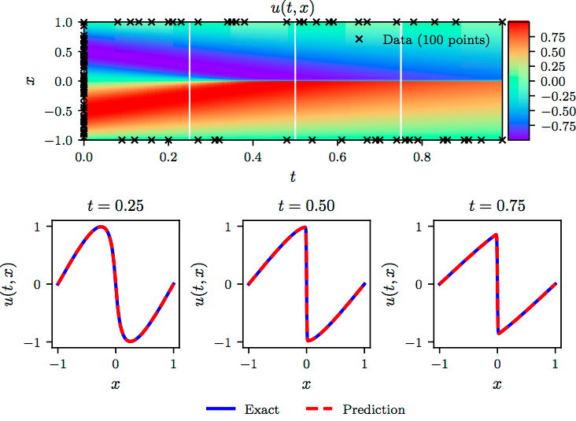
2. Scientific knowledge into the learning process
Physics-Informed Neural Network (Raissi et al., 2019)
- The NN is given time and space coordinates $(x,t)$ as inputs and is trained to predict $u(x,t)$
- Loss function: \[ \mathcal{L}(\boldsymbol{\theta}) = \underbrace{\dfrac{1}{N_u} \sum_{i=1}^{N_u} |u(x_u^i, t_u^i) - u^i|^2}_{\text{data-driven loss}} + \lambda \underbrace{\dfrac{1}{N_f} \sum_{i=1}^{N_f} |f(x_f^i, t_f^i)|^2}_{\text{physics-driven loss}} \] where $f(x,t)$ is the PDE residual
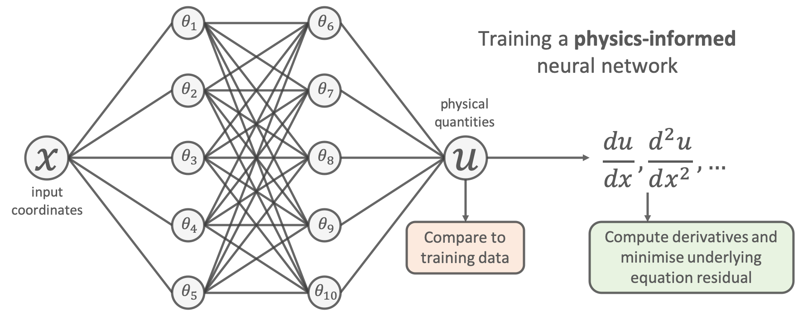
Note:
- Training points used for computing the data-driven term
- Collocation points sampled from the domain for computing the physics-driven term
3. Architectural modifications
Key idea: modify the architecture of ML models to respect scientific principles
- Most representative approaches are Neural Operators
- Let $\mathcal{A}$ and $\mathcal{U}$ denote the spaces of input and output functions, respectively
- NO learn a mapping $\mathcal{G} : \mathcal{A} \to \mathcal{U}$ that respects the underlying physics
General idea:
- DL architectures are designed to learn mappings between input and output vector spaces:
- We need architectures that can learn mappings between function spaces:
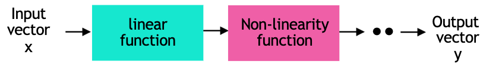
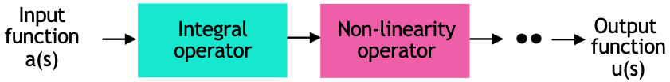
3. Architectural modifications
Fourier Neural Operator (Li et al., 2021)
- $a : \Omega \to \mathbb{R}^m$, $u : \Omega \to \mathbb{R}^n$ and $\Omega \subset \mathbb{R}^d$ a bounded space
- The integral operator is approximated using the Fourier transform
- $R$ allows to filter the fourier modes: model dynamic at different scales
- $W$ captures local informations and non-periodic boundary conditions
- FFT operates on regular grids but can operate on different resolution as the one in training
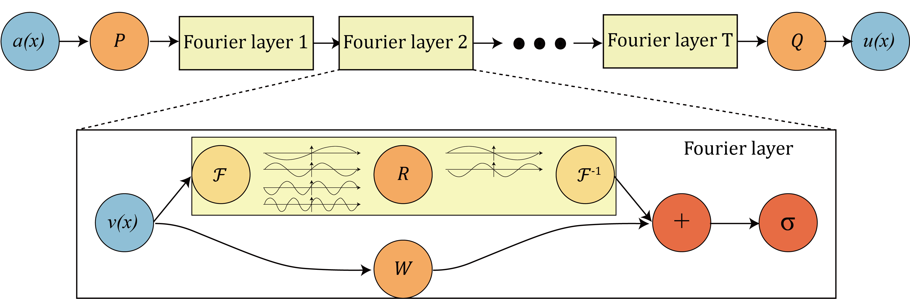
Fifty shades of Neural Operators
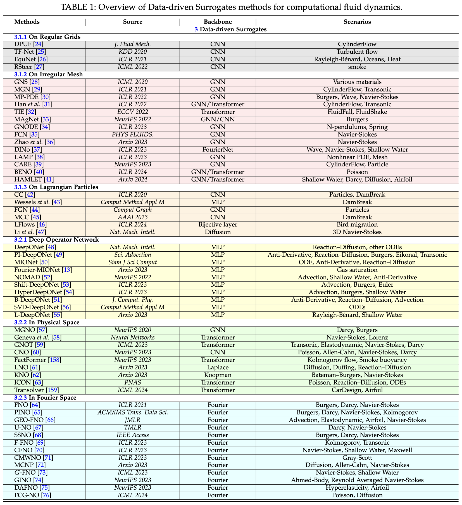
AI4Science
Very active research area since ∼2020
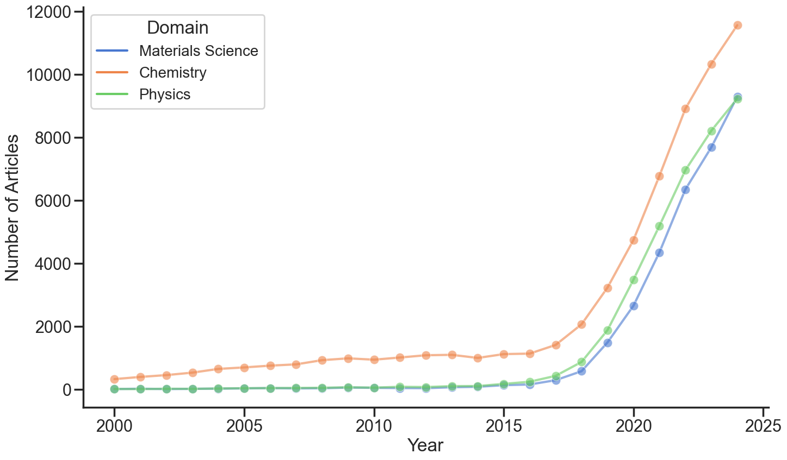
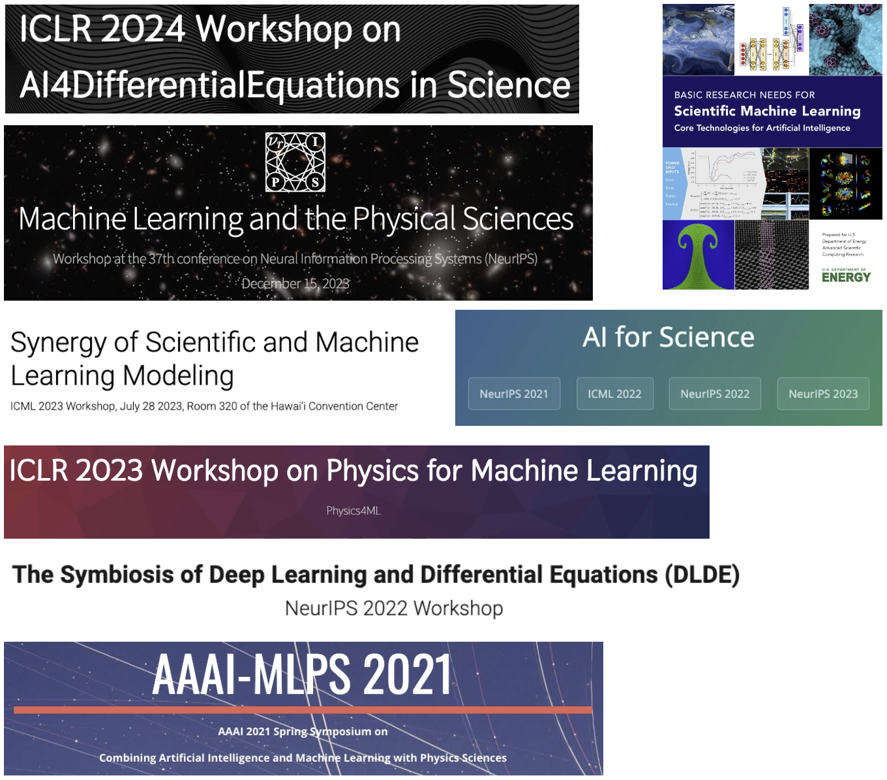
- This talk is just a partial view of the domain
- Fast expanding topics, involving multiple communities
Takeaways
- Know your data
- Define the machine learning task
- Choose the right model with the right representation learning blocks
- Integrate domain knowledge into ML models
- Modern approach (neural operators) are promising for challenging scientific problems
- But no need to use a sledgehammer to crack a nut!
- NO and co. are promising but not always better than traditional approaches
- Model interpretability and uncertainty quantification
- Out-of-distribution generalization is still a challenge
- Computational cost and scalability